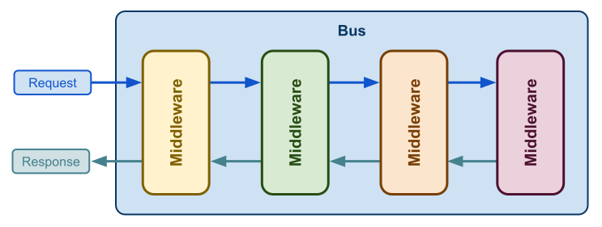
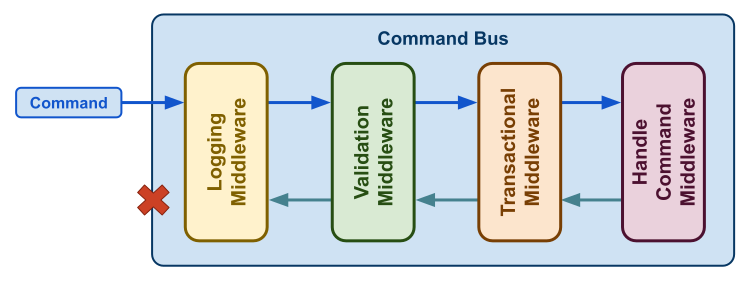
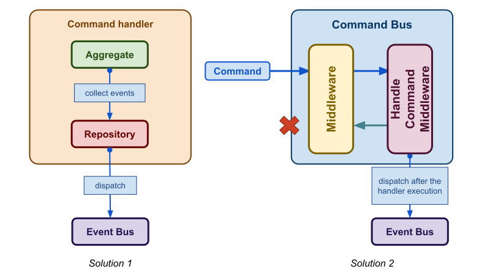

Note: Before reading this blog post, if you don’t know what a command and a command handler are, I advise you to first read the blog post I’ve written about those design patterns. It will help you to understand this new article:

What is a bus?
Let’s start with the basics, what is a bus? In computer science, a bus is a system that connects several components and transfers data between them. In software, those components are called middleware. A middleware processes an incoming request and returns a response. As you can see in the schema below, the main advantage of a bus is that it is highly customizable as you can add as many middleware as you want.

In the next sections, we will speak about the command bus which is often associated with an event bus. Using an event bus is not mandatory but we will see how it will make your application more modular and evolutive. Their goal is to deliver a command or an event to their handler(s). Events and commands are objects used to encapsulate information needed to achieve an action (a command) or to tell what happened in the system (an event).
The command bus
Quick reminder about command and command handler: A command represents a user’s intent. The data carried by the command has to be valid. It can be only handled by only one handler that is just a callable that will perform the user action.
Now, we will build a command bus following the same architecture that I described in the previous section. The only difference is that the command bus will return void. As commands canmight be handled asynchronously, we don’t want to wait for the result of the command processing.

Let’s see the most common middleware used to build a command bus. The first one is probably the “logging middleware”. It helps to make your application observable and it is really useful for bug hunting. Then the “validation middleware” ensures that the command is valid before giving it to the handler. Its purpose is to stop the command processing if data is invalid. It is pretty convenient because it avoids validating them manually. When your application uses a database, the “transaction middleware” wraps the handler execution into a SQL transaction. It makes sure all database changes are done, otherwise it rollbacks the transaction. Finally, the last middleware is responsible for finding and executing the handler that matches the command.
The event bus
An event represents something that happened in the application. Unlike a command, an event can be handled by several handlers. Listening to events allows us to enhance existing features or add new ones very quickly. Several teams can listen to the same event to perform additional tasks depending on business needs. It makes applications more evolutive without adding accidental complexity and lets your team work isolated from each other.
Tip: I would like to encourage you to mainly use business-oriented events instead of technical ones. They clearly describe what happened from a business point of view. For example, NewAccountHasBeenCreated is more understandable than ResourceCreated with a resource property equal to ‘Account’
Even if the event bus is built the same way as the command bus we don’t need all the different middleware. We don’t need the validation middleware because events are generated by the aggregates with value objects. Those objects ensure domain invariant which means they are always valid. We also don’t need the transactional middleware because the event will be processed into the transaction begun during the command processing. Moreover, depending on your business needs you may not want to process events into this transaction. Let’s take a simple example. After creating an account, an event AccountCreated is dispatched, then a welcome email is sent during AccountCreated processing. If the email sending fails, do we want to roll back the account creation? Not sure! In that case, you need to speak with your product manager to decide how to process this event.
As I said previously, events are recorded by aggregates and they should be business oriented. I will share with you two ways to dispatch events into the event bus.

Solution 1: You can collect them from your repository if no errors have been raised during the aggregate persisting and then dispatch them.
Solution 2: The other solution is to collect events from the command handler. The handler can return them, and then the “handle command” middleware catches and dispatches them.
Note: My previous blog post about the command and command handler pattern said that a command handler should return void. Here, the idea is that the command bus should return void only the “handle command” should be aware of the result of the handler execution.
I’ve written a bunch of articles about how to handle a command, validate its data, handle user permissions, and so on. Take a look at these articles:

Thanks to my proofreader @LaureBrosseau.